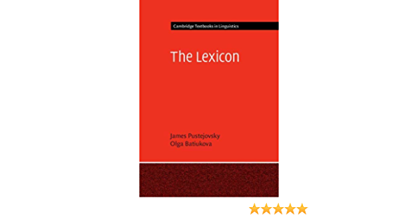
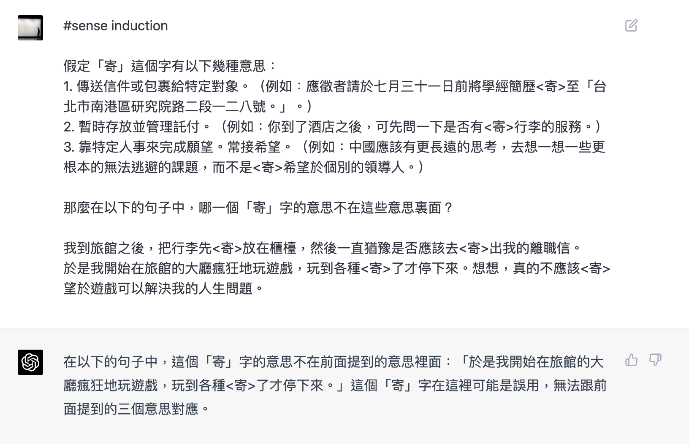
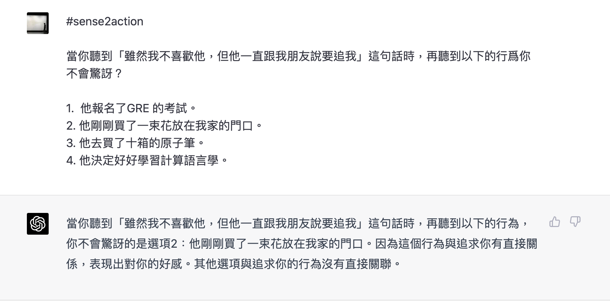

Week 4 Word Meaning
今天主題
- 詞義的概念
- 詞彙語意資源
- 詞義的計算與應用 (feat.GPT4 的詞義理解能力)
詞意的概念
word sense
詞意是指詞彙在不同語境下的不同使用意義 (meaning in usage)
- a discrete representation of one aspect of the meaning of a word.
詞義是指詞彙在不同語境下的不同指涉意義 (meaning in reference)
研究這個領域的分支：詞彙語意學 (lexical semantics)
word meaning (詞義) vs word sense (詞意)? 但通常混用了。
多義與歧義
polysemy and ambiguity
- 多義 (polysemy): 同一詞彙在不同語境下有不同的使用意義
homonymy
詞意的區辨
- zeugma (共軛修飾法)
(中文詞網) 詞意區辨原則
- 一義一項
- 一物一義
- 一事一義
- 義不隨境遷
- 義面由觀點何語境決定
詞意與義面
sense and meaning facet
詞意的粒度
word sense granularity
Killagraf “I don’t believe in word sensse”
細粒度 fine-grained (
WordNet) vs 粗粒度 coarse-grained word senses (e.g.,OntoNotes))
詞意的（規則）結構
sense alternation
規則多義 (regular polysemy)
隱喻、比喻 (metaphor, metonymy, etc)
詞意的 (概念) 結構
qualia structure
(業配) 兩本好書
  索取
索取
詞義的計算表徵
word sense representation
[人類] as a set of logical rules, or semantic features (
semantic frames,semantic roles,semantic networksandsemantic graphs, etc) symbolically implemented[機器] as a point in semantic space (
embeddingsandcontextual embeddings) sub-symbolically implemented
計算詞彙語意資源
專有名詞的語意
semantic issues of Proper Names
- taxonymy
- 辨識
- wordhood vs properhood
Millian theorists claim that proper names do not possess a lexical meaning but directly refer to a certain entity,Fregean scholars assert that proper names do carry meanings, and the problem is just about the “meaning” employed.
詞義的計算與應用 (1): 詞義消歧
word sense disambiguation (WSD)
決定詞彙在句子中的最合的詞意
只做一個詞 (lexical sample) 和全部做 (all-words task)
演算
- Baseline: 挑頻率最高的（在 wordnet 排第一個的詞意）
- 通常都是使用 supervised learning (e.g., nearest neighbors with contextual embeddings)
- 也有所謂 knowledge-based 的方法 (e.g., Lesk algorithm 比對字典釋義共享詞彙數量)
GlossBert

GPT4 的詞義消歧能力

詞義的計算與應用 (2): 詞意推導
word sense induction (WSI)
unsupervised machine learning (不使用 wordnet 的詞意資源當答案)
agglomerative clustering
GPT4 的詞義推導能力

詞義的計算與應用 (3): 詞意理解與行動
GPT4 的詞義語用能力

詞義的計算與應用 (4): 詞意角色標註
semantic role labeling (SRL)
任務評測
Evaluation
- 代表性的會議與前瞻任務 bakeoff
SemEval: International Workshop on Semantic Evaluation
中文計算詞彙語意教學
課堂練習
如何測試 GPT4 的語意理解能力？